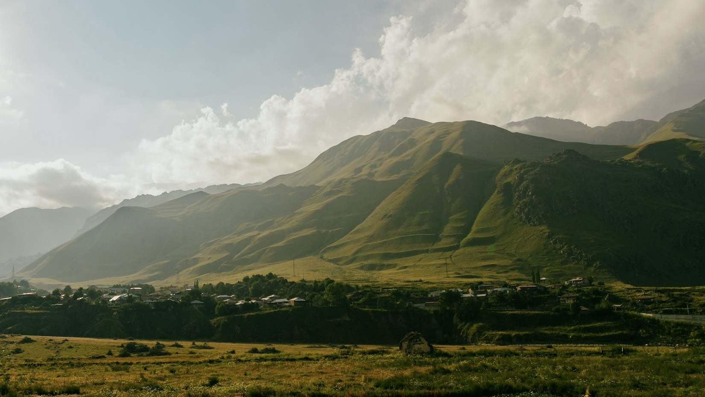
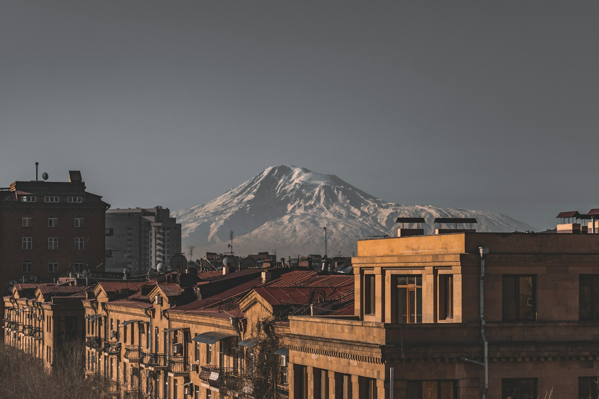
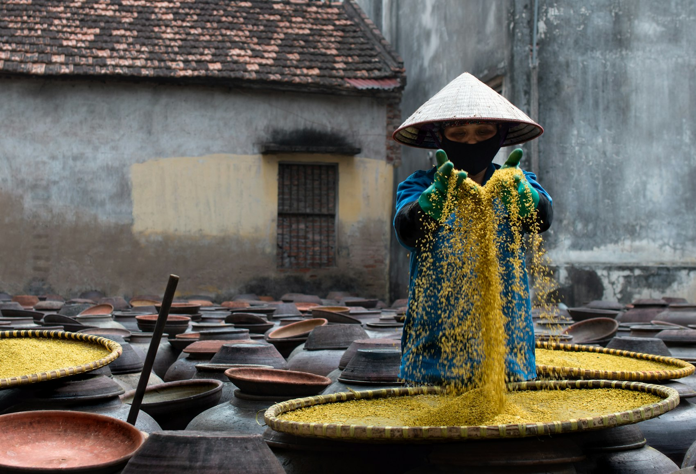
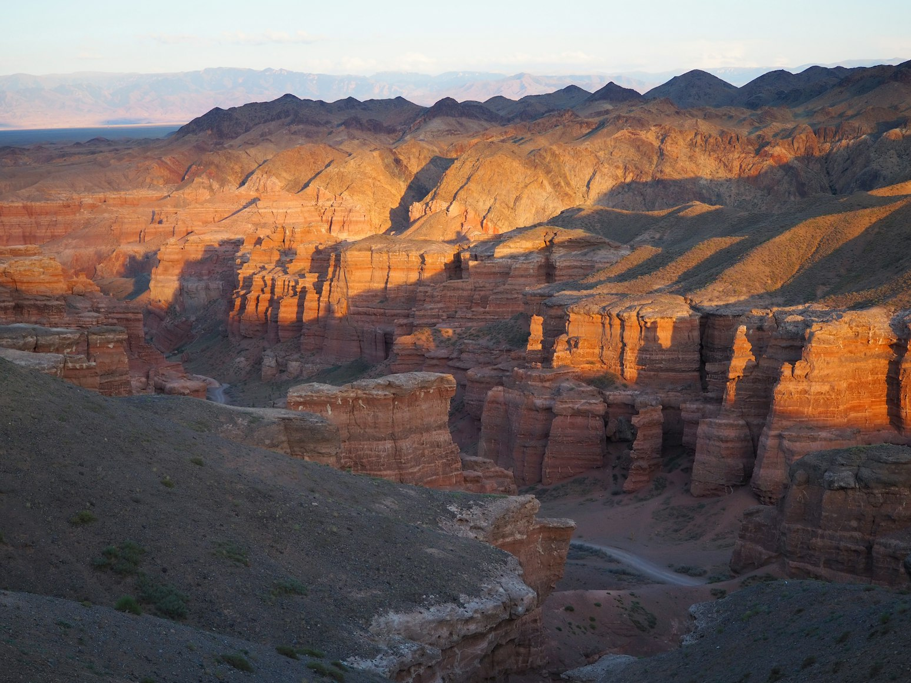
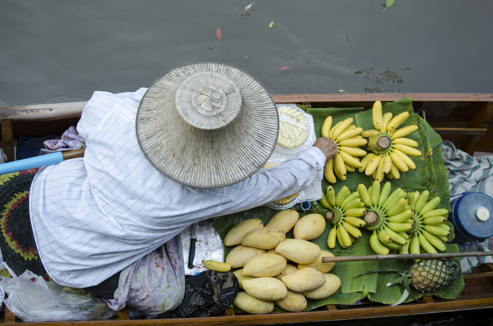
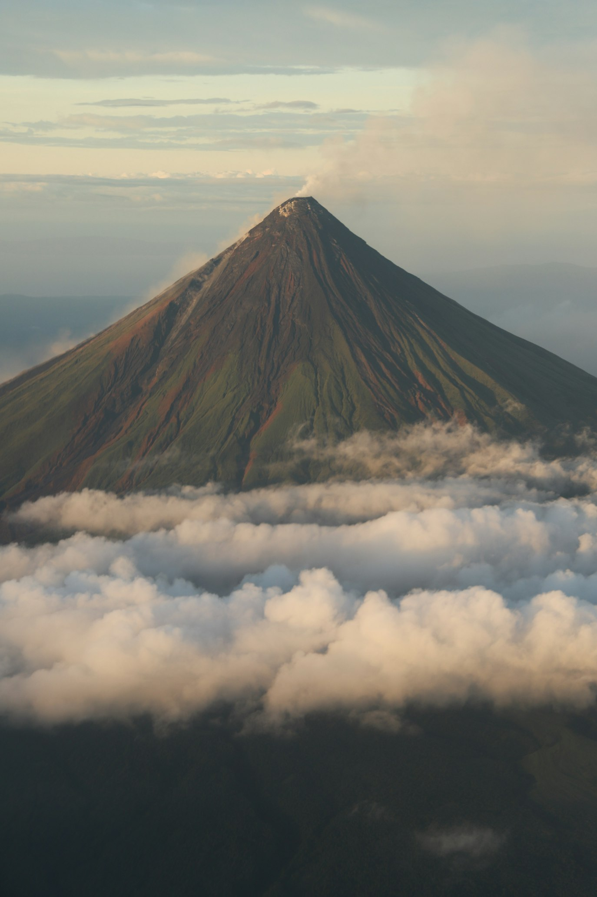
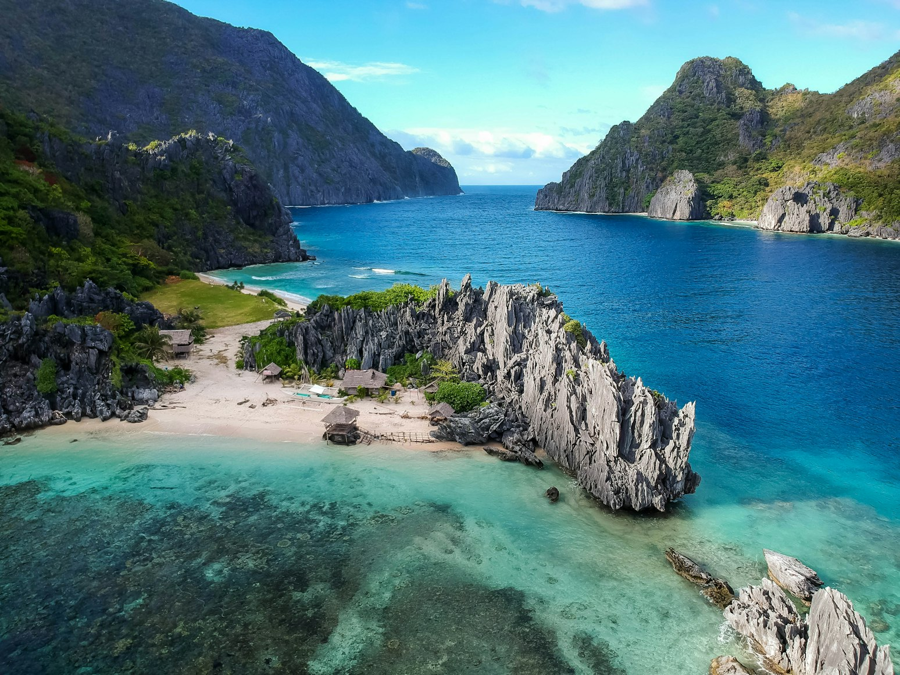
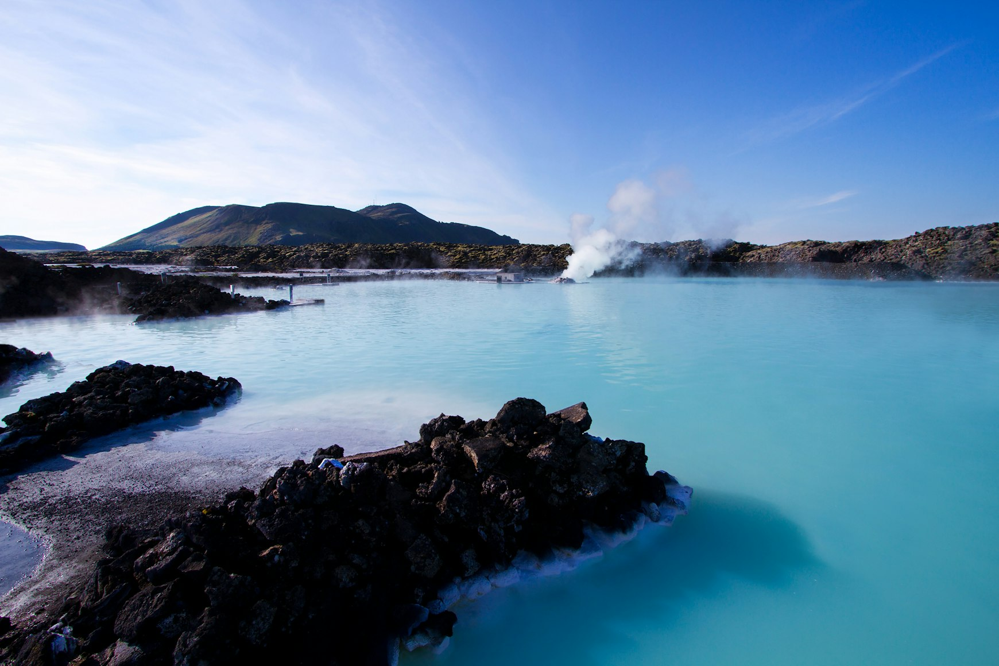

Where Georgia Feels Endless
Mountain roads, silence, weather, and landscapes that still feel larger than human infrastructure.
Read article →Travel guides
Calm, practical guides focused on what a place actually feels like, when to go, and what’s worth your time.
Recent travel stories focused on atmosphere, food, unusual places, timing, and practical planning.

Mountain roads, silence, weather, and landscapes that still feel larger than human infrastructure.
Read article →
Traditional desserts deeply tied to climate, memory, neighborhoods, and evening city life.
Read article →
Dark stone monasteries, volcanic landscapes, and the architectural atmosphere of Armenia.
Read article →
A ten-day journey through the regional food culture of Hanoi, Hội An, and Ho Chi Minh City.
Read article →
Petrified waterfalls, pink salt lakes, hidden cenotes, desert ghost towns, and landscapes that feel almost unreal.
Read article →
Vast canyons, silent deserts, and landscapes that feel almost extraterrestrial.
Read article →
How Vietnam’s north, center, and south developed completely different culinary identities.
Read article →
Volcanic islands, quiet coastlines, and places that feel far from the usual postcard version.
Read article →
Coffee, baguettes, pâté, and the colonial layers still visible in Vietnamese food culture.
Read article →
Weather, sea crossings, island logistics, and what travelers often underestimate.
Read article →
Beautiful places that can feel strangely empty, staged, or disappointing in real life.
Read article →About
Faraway Postcards publishes practical travel guides about timing, atmosphere, food, unusual places, and the small details that shape a trip. The goal is simple: help people plan trips that feel less rushed, less generic, and more memorable.
More about the site →